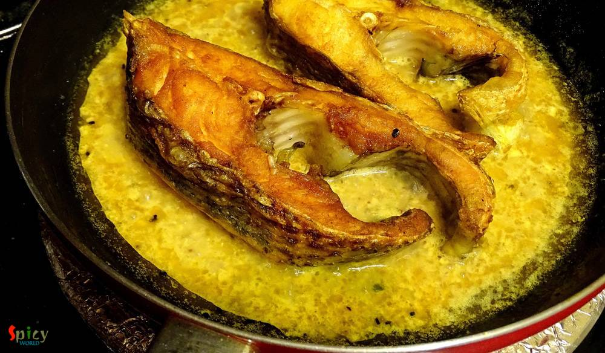

Simple and Easy Recipes
Sorse bata Maach / Sorshe Maach / Fish Mustard Curry
© 2016 Spicy World, Published on: Jan 19, 2016
As I am Bengali, my favourite fish curry is this one. My husband is also a huge fan of fish and specially this curry. It goes best with hot plain rice. This is a very easy process and the recipe is pretty simple. Try this in your kitchen and let me know how it tastes.

Ingredients

Steps
Soak the black and yellow mustard seeds for 1-2 hrs.
Then put those in a grinder along with 1 green chilies, half Teaspoon of salt and some water. Make a thick paste.
Take 3 Teaspoons of paste in a bowl along with some salt, red chilli powder and half Teaspoon of turmeric powder.
Add little water and make a runny paste. Keep it aside for later use.
Wash the fish pieces thoroughly into the water.
Then marinate the pieces with 1 tsp salt and 1 tsp turmeric powder for 5-10 minutes.
Heat mustard oil in a pan. Fry the fish pieces from both side in the oil.
Then remove them from oil.
As we will make the gravy with the same oil, so, we need only 4 Teaspoons of oil. Remove the excess oil from the pan.
Add nigella seeds and green chilies into the hot oil.
Then add that runny mustard paste in hot oil. Sauté it for 2 minutes.

Add the hot water, salt and pinch of sugar. Mix it well for a minute.
Now add the fried fish pieces. Cover the pan and cook for 5 minutes in slow flame.
Check the seasoning. If you want to add chopped coriander leaves, feel free to add.
Turn off the heat and let it rest for 2 minutes, then serve.
Your Fish Mustard Curry is ready.
Serve hot with plain rice.
")